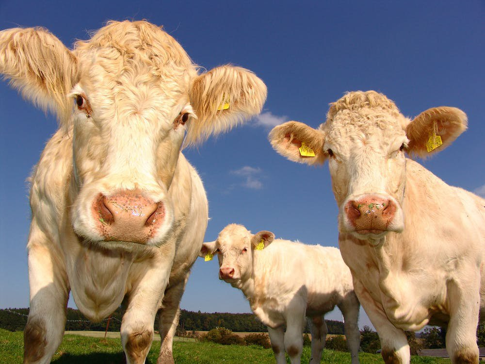

Lesson 10
UNIT 2
My specialty is techologist
BASIC LIVESTOCK PRODUCTION

Cattle breeding
Learn the active vocabulary of the Lesson and be ready to use it in your further work:
Cattle n – велика рогата худоба;
ox n – віл;
steer n – кастрований бичок;
bull n – бик;
cow n – корова;
beef n – яловичина, м'ясна худоба;
dairy cattle,
dairy cow – дійна худоба, дійна корова;
bovine
adj – бичачий;
gestation
n – тільність;
castration
n – кастрація;
calf
n – теля;
tractable adj
– піддатливий, податливий;
cattle breed – порода великої рогатої худоби;
beef breed – яловича порода;
draft breed – робоча порода;
meat-draft breed – м'ясо- робоча порода;
meat-dairy breed – м'ясо-молочна порода;
dairy draft breed – молочно- робоча порода;
meat-dairy-draft breed – м'ясо-молочно- робоча порода;
dairy breed – молочна порода;
slaught v – забивати;
slaughter
n – забій;
reare v – розводити; вирощувати;
bring v (p.p.
brought)
– заводити, доставляти;
crowd v – скупчуватися; збиватися докупи;
feedlot n
– комбікормовий майданчик, відгодівля;
fattening – відкорм;
on
slatted floors – на рейкових підлогах;
injury n – ушкодження, травма;
lameness n – кульгавість.
Read and translate the text:
CATTLE Cattle
are domesticated bovine farm animals that are raised for their meat or milk, for
their hides, or for draft purposes. The male is first a bull calf and if left
intact becomes a bull; if castrated he becomes a steer and in about two or three
years grows to an ox. The female is first a heifer calf, growing into a heifer
and becoming a cow. Males retained for beef production are usually castrated.
Castration is practiced to make them more tractable at work. Historically
there was less distinction between dairy cattle and beef cattle, with the same
breeds used for both milk and meat. However, in the developed world today
farmers generally keep either beef or dairy cattle. Through generations of
selection, dairy breeds such as the Holstein, are bred specifically to produce
very high volumes of milk. There
are about 277 cattle breeds in the world, with 33 generally classified as beef
breeds, 18 as draft breeds, 39 as meat-draft, 54 as meat-dairy, 21 as dairy
draft, 61 as meat-dairy-draft, and 51 as dairy breeds. The
calves of dairy and beef cows are likely to have very different lives. Beef
cattle are generally slaughtered after one to two years in Europe but they can
be up to five years old in the case of extensively reared animals. Female dairy
calves are usually reared on for milk production. Dairy cows produce some male
calves which are generally less suitable for beef production. Sadly, in the UK
some of these are either shot at birth or could be exported to low welfare veal
farms outside the UK. Fortunately the number of calves being exported from
England, Scotland and Wales is low currently, but several thousand animals are
exported to the continent each year from Northern Ireland. Due
to co-operation between Compassion in World Farming, the RSPCA and the industry
through the Calf Stakeholder Forum, more male dairy calves are now reared
humanely for beef and the number of calves being shot at birth has greatly
decreased. There is more work to do - around 95, 000 dairy calves are still shot
every year. Beef cattle are often reared outdoors on grass, although many are
brought indoors or crowded into feedlots for fattening before slaughter. Even
though many cattle in the UK, Ireland and Northern France are fattened on grass,
many cattle are kept indoors and fattened on a high grain diet across most of
Europe. In indoor systems, beef cattle are commonly housed on slatted floors in
crowded conditions, which increases aggression and can lead to severe injuries
and lameness.
GRAMMAR EXERCISES
I. Answer the following questions:
1.
What are cattle? 2.
What purposes do cattle serve? 3.
When does the male become a bull (a steer, an ox)? 4.
When does the female become a cow? 5.
Why is castration of males practiced? 6.
What are the classification and breeds of cattle? 7. What
lives do the calves of dairy and beef cows have? 8.
Where
are beef cattle often reared?
II. Define the part of speech of the following words and translate
them:
Apply, application, applicable, specify, specific, specification,
treat, treatment; represent, representative, representation; vary, various,
variable, variability, variation, variety; fertile, fertilize, fertilization,
fertility, fertilizer; organ, organic, inorganic; success, successful,
successfully, constitute, constitution, constitutiv.
III. Choose the correct word. Translate the sentences without a
dictionary:
1.
The cow is dried off at least six weeks before ……. a)
weaning. b) calving. c) milking. 2.
The ….…. period in cows lasts about nine months. a)
digestion; b) duration; c) gestation; 3.
Good feeding ………. milk yields. a)
increases; b) decreases; 4.
Carbohydrates should be in a ……… form. a)
valuable; b) available; 5.
Ration should provide ……….. fat and minerals. a)
efficient; b) essential; c) sufficient; 6.
Little milk is produced by the cow if feeding and management conditions are
……….. a) proper. b) improper. c) properly.
IV. Translate the sentences paying attention to the wolds in bold
type:
a)
1. The calves for vealing are fed whole milk until
they
reach the weight of
about 300 pounds. 2. Young grass should not be grazed until it
is 4-8 inches high. 3.
The calf usually sucks its dam until it
is about a week old. b)
1. Carborhydrates and fats are very important for the
animals for they supply
most of the energy. 2. The feeding value of this silage is very high, for it
is made of young leafy grass. 3. Whole milk is fed to the calf for 8
or 10 weeks. c)
1. The animals should not be given too cold
water. 2. This calf house is too
old
too.
3. Wheat straw is too high
in indigestible fibre. 4. This grass is too young
to pasture the cattle on it. 5. The bulls are on pasture too.
V. Fill in the blanks with proper words given below:
1. The heifer usually … at about 2.5 years of age. 2. The first
milk, … is very important for the calf. 3. The calf usually sucks its … for
about a week. 4. The calf begins to drink milk from … . 5. One should not give
the calf … cold milk. 6. At three weeks the calf is given some … . 7. The calf
being 10 weeks old, … is given. 8. To produce milk cows need much … and
nutritious feed. 9. Energy is supplied by … and … . 10. Minerals are especially
required by … animals.
Dam, water, a pail, calves, skim milk, carbohydrates, young,
colostrum, too, fats, hay.
VI. Read and translate the text:
THE COW The
cow belongs to the class of ruminants. Its value as a domestic animal consists
in her ability to consume and digest large quantities of roughage and to convert
it into milk and meat for human food. The
cow’s stomach, which is a compound one, has four compartments: rumen,
reticulum,
omasum, and abomasum. The stomachs of mature cows vary in capacity from 25 to 60
gallons depending on the size of the animal. To produce a large supply of rich
milk, cows must be not only well fed but also be of good milking qualities.
The
cows that are producing milk require a much larger quantity of water than is
necessary for growing animals. Period
of gestation in cows is about 40 weeks. The
lactation period is the period of milking. The first milk called colostrum and
it necessary laxative action on the calf’s stomach. In summer the consumption of water by cattle is greater on account
of the greater evaporation from the skin.
VII. Answer the following questions:
1.
What class of animals does the cow belong to? 2.
What farm animals chew the cud? 3.
Why is the cow valuable animal? 4.
How many compartments are there it the cow’s stomach? 5.
Are enzymes secreted in the first compartment? 6.
How long does a period of gestation in the cow last? 7.
How long does the lactation period last? 8. In what season do the cattle consume more water?
VIII. Translate the following sentences, define the form of
Conditional sentences:
1.
If cold milk is given to new – born calves, it will cause scours. 2.
If cold milk were given to new – born calves it would cause scours. 3.
Cows will develop well if they are fed nutritious feeds. 4.
Cows would develop well if they were fed nutritious feeds. 5.
If we grow legumes, we shall have a good feed in winter. 6.
If we grew legumes, we should have a good feed in winter. 7.
Bulls would grow better if they had been kept on pasture. 8.
The cow would receive about 3 pounds of protein in her ration if she produced 25
pounds of milk. 9.
If there were too much fat in the ration, it would lead to digestive troubles.
10.Calves
will produce high – quality veal if they are weaned at the age of eight
weeks. 11.If
we provided the cows with highly nutritious feed, we should obtain more milk.
IX. Find a definition for the following words:
X.
Read and translate the text:
SELECTED BREEDS OF DAIRY AND BEEF CATTLE Ayrshire
is a breed of dairy cattle originating in Scotland in the latter part of the
18th century. It is considered to be the only special dairy breed to have
originated in Great Britain. The body colour of the Ayrshire varies from almost
pure white to nearly all cherry red or brown with any combination of these
colours. The beef qualities of the breed are of secondary importance. It is
most strongly represented in the United Kingdom, Canada and the United
States. Jersey
is a breed of small short-horned dairy cattle originating on Jersey, one of the
Channel Islands. The colour of the Jersey is usually a shade of cream, but
darker shades are common. The Jersey is adaptable to a wide range of conditions,
and its distribution is worldwide. Jersey’s milk is remarkably rich in
butterfat. Angus
is a breed of black, polled beef cattle, for many years known as Aberdeen Angus,
originated in northeastern Scotland. The characteristic features of the breed
are black colour, polled head, compact and low-set body, and fine quality of
flesh. The
Angus is a beef breed of the highest rank, and for years purebred or crossbred
Angus steers have held high places of honour at the leading fat-stock shows in
Great Britain and the United States. This breed was introduced into the United
States in 1873. Words: Polled – комолий, безрогий originate – походити, започатковувати steer – кастрований бичок purebred – чистокровний crossbred – гібридний slaughter – забій скоту pronounced hump – виступаючий горб fore quarter – передня частина туші strain – порода.
XI. Answer the following questions:
1.
Name the most popular breeds of dairy cattle. 2.
Where does the Ayrshire breed come from? 3.
When did it originate? 4.
What can you say about body colour of the Ayrshire breed? 5.
In what countries is Ayrshire most strongly represented? 6.
Which are the main characteristics of Jersey? 7.
What is the origin of Jersey? 8.
What colour is this breed? 9.
Jersey is in great demand. Why? 10. Which are the characteristic features of Angus
breed?
XII. Make up sentences, matching the right words
compositions:
1.
During six weeks before calving 2.
The cow should be milked 3.
Wheat bran 4.
The period of lactation 5.
Some cows 6.
Liberal amount of water 7.
Cows will not produce much milk a.
is needed for a dairy cow. b.
depends on the age, breed and feeding. c.
may produce as much as 2000 gallous of milk per year. d.
plenty of roughage is fed to the cow. e.
unless they are fed and cared for properly. f.
every other day before calving. g.
is very good for the cow before calving. XIII. Give the plural of the following words:
Capacity, quantity, ability, dairy, supply, quality, body, cherry,
humidity, injury, variety, pigsty.